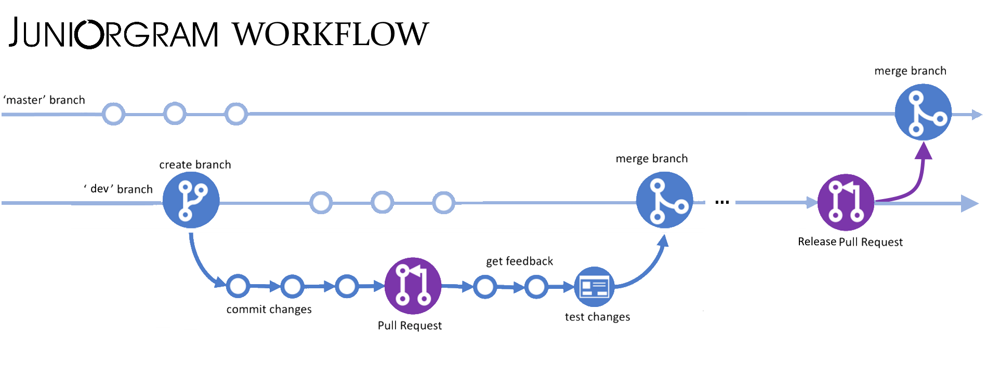

|
Juniorgram 0.6
C++ written messenger! Never before and never again!
|
Loading...
Searching...
No Matches
|
Juniorgram 0.6
C++ written messenger! Never before and never again!
|

The development of the application is broken down into some intermediate steps. Each stage is described in a specific milestone. When all the tasks nested in the current cycle have been completed, a procedure for capturing the changes is initiated. This procedure is called a release. It commits to the main branch and starts the CI/CD procedure which sends the updated binaries to the server.